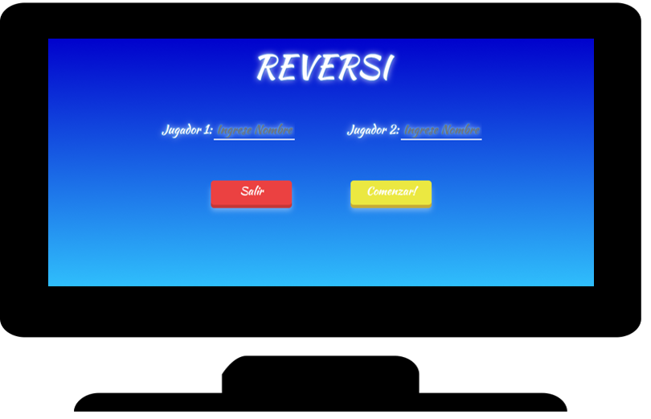

Aburrido???

Tu objetivo es hacer cambiar de color las fichas de tu contraincante, colocando dos de tus fichas a los lados de las del contrario.
Los jugadores comparten 64 fichas iguales, de caras distintas, que se van colocando por turnos en un tablero dividido en 64 escaques. Las caras de las fichas se distinguen por su color y cada jugador tiene asignado uno de esos colores, ganando quien tenga más fichas sobre el tablero al finalizar la partida. Se clasifica como juego de tablero, abstracto y territorial; al igual que el go y las amazonas.